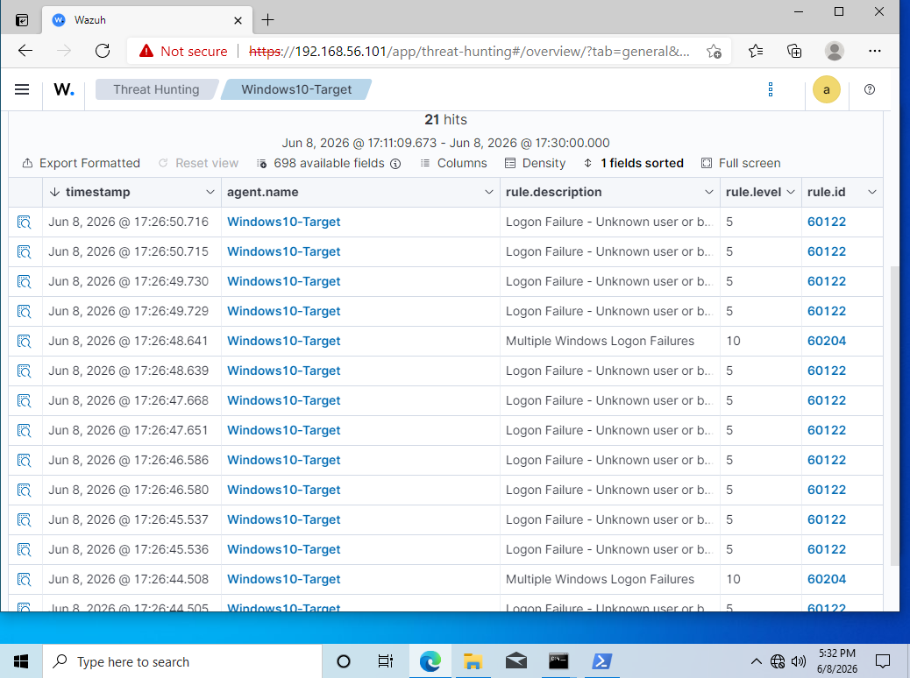

SOC Detection Lab
A home SOC built to run the full analyst workflow end to end: generate the attack, catch it in the SIEM, triage the alert, map it to a technique, and write it up properly. Nine scenarios, nine incident reports.
Why I built it
Reading about detection is not the same as watching a rule fire and having to decide what it means. I wanted an environment where I could generate an attack deliberately, see exactly what telemetry it produced, and practise the part of the job that actually takes judgement — deciding whether an alert is real and what to do next.
The constraint I set myself was that every scenario had to end in a written report. A detection that only lives in my head isn't worth anything to a team.

A network diagram of the lab — attacker VM, target hosts, and where the Wazuh manager and agents sit. draw.io is free and takes ten minutes.
How it was built
- Deployed a Wazuh manager with agents on a Windows host and a Linux host
- Installed Sysmon with a tuned configuration for process, network and registry telemetry
- Configured log forwarding so both hosts reported into a single console
- Ran nine distinct attack scenarios from Kali Linux against the targets
- Triaged each resulting alert as an analyst would — verify, scope, decide, escalate or close
- Mapped every detection to its MITRE ATT&CK tactic and technique
- Wrote a formal incident report per scenario
What surprised me
Replace this with the thing that didn't go how you expected — a rule that never fired, a noisy detection you had to tune down, or an attack that was invisible until you added a specific Sysmon event. Interviewers ask about exactly this, and a real answer beats a rehearsed one.

The alert as it appeared in the Wazuh console — rule ID, severity, source host, raw event.
Detection logic
Paste one real rule or query here — a Wazuh rule, a Sigma rule, or a KQL hunt. This is the single most credible thing on the page, because it's the thing you can't fake:
<!-- Replace with an actual rule from your lab --> <rule id="100200" level="10"> <if_sid>92000</if_sid> <field name="win.eventdata.image">\\mimikatz\.exe$</field> <description>Credential dumping tool executed on $(win.system.computer)</description> <mitre><id>T1003</id></mitre> </rule>
Then explain in one or two sentences why it's written that way — what it catches, and what would make it noisy.
Results
- Nine scenarios executed, all producing detectable telemetry
- Nine incident reports covering detection logic, scope, and response steps
- Coverage mapped against MITRE ATT&CK so gaps were visible rather than assumed
What I'd do differently
- Add a second data source so detections can be correlated rather than taken at face value
- Automate scenario replay so rule changes can be regression-tested
- Track time-to-detect per scenario as a measurable baseline